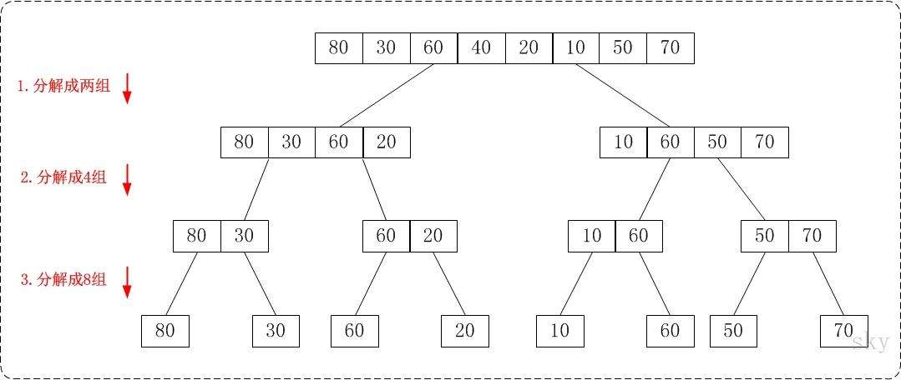

分治法 (Divide and Conquer)
很多有用的算法结构上是递归的，为了解决一个特定问题，算法一次或者多次递归调用其自身以解决若干子问题。 这些算法典型地遵循分治法的思想：将原问题分解为几个规模较小但是类似于原问题的子问题，递归求解这些子问题， 然后再合并这些问题的解来建立原问题的解。
分治法在每层递归时有三个步骤：
- 分解原问题为若干子问题，这些子问题是原问题的规模最小的实例
- 解决这些子问题，递归地求解这些子问题。当子问题的规模足够小，就可以直接求解
- 合并这些子问题的解成原问题的解
归并排序
现在我们就来看下归并排序是是如何利用分治法解决问题的。
- 分解：将待排序的 n 个元素分成各包含 n/2 个元素的子序列
- 解决：使用归并排序递归排序两个子序列
- 合并：合并两个已经排序的子序列以产生已排序的答案
例如：列表 [80, 30, 60, 40, 20, 10, 50, 70] 使用分治法进行排序，首先递归着将数组进行分解

当数组被完全分隔成只有单个元素的数组时，我们需要把它们合并回去，每次两两合并成一个有序的序列。

用递归代码来描述这个问题：
def merge_sort(seq):
'''归并排序'''
if len(seq) <= 1: # 递归出口
return seq
# 中间位置
mid = len(seq) // 2
# 递归拆分成左右两个部分
left_half = merge_sort(seq[:mid])
right_half = merge_sort(seq[mid:])
# 再将排好序的合并回去
new_sort_list = merge_sort_list(left_half, right_half)
return new_sort_list
有一个函数没有实现，就是merge_sort_list，怎么合并两个有序列表。

合并两个有序列表：将所有的数保存到一个新的列表中，分别用两个指针a，b遍历列表a，列表b，判断元素的大小，直到某一个列表遍历结束，最后把剩余的元素追加到new_list中。
def merge_sort_list(sort_a, sort_b):
'''
合并两个有序列表
:param sort_a: 有序列表a
:param sort_b: 有序列表b
'''
a = b = 0
length_a, length_b = len(sort_a), len(sort_b)
new_sort_list = []
while a < length_a and b < length_b:
if sort_a[a] < sort_b[b]:
new_sort_list.append(sort_a[a])
a += 1
else:
new_sort_list.append(sort_b[b])
b += 1
# 把多余的列表元素追加到new_sort_list
while a < length_a:
new_sort_list.append(sort_a[a])
a += 1
while b < length_b:
new_sort_list.append(sort_b[b])
b += 1
return new_sort_list